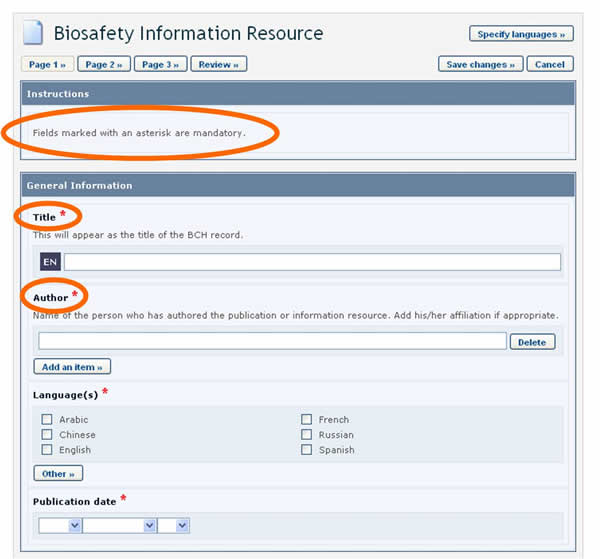
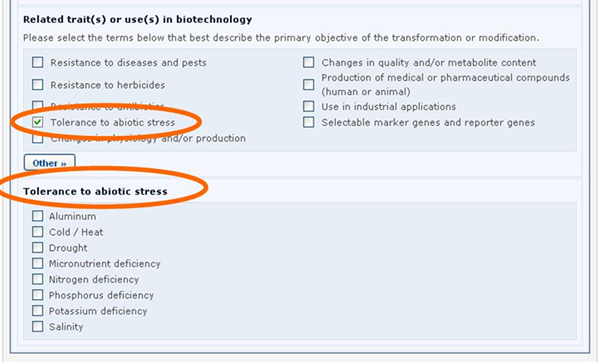

El siguiente diagrama muestra los pasos generales requeridos para registrar o editar información en el CIISB.
Las siguientes imágenes presentan los típicos formularios en línea, explicando el uso de los diferentes campos.
Los componentes resaltados en estas figuras son los siguientes:
-
Tipo de registro: Los recuadros sombreados en azul claro describen el tipo de información que deberá ingresar en esta sección.
-
Nombres de campos: El texto en negrita es el nombre del campo en el que debe ingresar los datos.
-
Selección de opciones excluyentes: Haga clic en la opción que desee. Tenga en cuenta que solo puede seleccionar una de ellas.
-
Agregar referencia: Al hacer clic en el botón se abre una página con una lista de los documentos disponibles que puede vincular. Si no hay ningún documento que contenga la información que necesita, puede crear uno haciendo clic en el botón Create (crear). Aparecerá una segunda solapa en la pantalla donde podrá crear el nuevo documento. Cuando haya terminado de ingresar la información y haya guardado el nuevo documento, volverá a donde estaba trabajando con el documento original. Algunos campos permiten agregar referencias a otras fuentes de información sin ser registros del CIISB:
-
4.1. Agregar página web: Permite agregar un vínculo a un sitio web. Debido a que los vínculos tienden a romperse con el tiempo, se recomienda adjuntar un archivo en vez de agregar un vínculo para que esté permanentemente disponible.
-
4.2. Agregar archivo: Permite adjuntar un archivo. Usted puede adjuntar archivos a los registros en cualquier idioma (botón Attach File). Sin embargo, se recomienda proporcionar traducciones de cortesía de los documentos en uno o más idiomas oficiales de las Naciones Unidas.
-
4.3. Agregar ítem: permite agregar información adicional, por ejemplo más números de teléfono.

-
-
Casilleros de selección: Cuando se trata de listas cortas de vocabulario controlado (es decir, una lista predeterminada de términos posibles; ver glosario para definición), se presentan a veces con casilleros de selección (o checkboxes). Para agregar o seleccionar un término, haga clic en el casillero que aparece al lado del término deseado.
-
Otros términos: Si el término buscado no aparece en la lista de vocabulario controlado, haga clic en el botón Other. Seleccione el término que mejor describe el término nuevo (esto ayudará a buscar el registro que se está ingresando), o elegir nuevamente other si no hay ningún término relacionado. Luego ingrese el término nuevo y presione el botón Continue.

-
Botón seleccionar (lista de vocabulario controlado): Al hacer clic en el botón se abre un menú de términos de la lista de vocabulario controlado, de donde debe seleccionar la opción que desea y presionar Continue.

-
Página de revisión: Luego de ingresar toda la información puede hacer clic en el botón Review y ver su registro tal cual aparecerá publicado. Es muy importante revisar el registro para asegurarse que esté completo y sea certero antes de su envío para publicación. Si hay errores en los campos, estos se mostraran con una descripción del error para cada uno de ellos. Los campos obligatorios no completados también son destacados. Si quiere hacer cambios, puede retornar a las páginas de registro.
-
Guardar cambios: al hacer clic en este botón se abre una pantalla con la opción de (i) publicar el registro o (ii) guardarlo como borrador para accederlo posteriormente.
-
Cancelar: al hacer clic en este botón se abre una pantalla con la opción de cancelar los cambios que acaba de hacer al borrador (al hacer clic en Confirm).
-
Números de página: En las partes superior e inferior de la página de ingreso de datos hay botones que permiten navegar por las diferentes páginas de un Formato Común.
-
Seleccionar idiomas: Ver la sección "Selección de idiomas" abajo.
Campos obligatorios
Al crear registros nuevos, los usuarios del CIISB deben asegurarse de que su información sea lo más exacta y completa posible antes de su publicación. Los campos obligatorios están marcados con un asterisco rojo. Los documentos que carezcan de la información obligatoria no podrán ser publicados.

Los usuarios del CIISB pueden elegir el o los idiomas en que deseen registrar sus registros. No obstante ello, todos los Formatos Comunes CIISB deben ser completados al menos en uno de los 6 idiomas oficiales de las Naciones Unidas (árabe, chino, inglés, francés, ruso y español) además de otros idiomas a elegir. Al hacer clic en el botón Specify Languages, que aparece en las partes superior de los formularios de registro en línea, se abre una ventana que permite seleccionar los idiomas en los que se ingresará la información. Los casilleros de selección permiten seleccionar los idiomas oficiales de las UN, mientras que la lista desplegable permite seleccionar cualquier otro idioma.


Referencias a otros registros
En algunos Formatos Comunes, se le solicitará que haga referencia a un Registro del CIISB existente o que cree uno nuevo basado en un Formato Común diferente (es decir, algunos campos hacen referencia a información contenida en otro documento).
Tomemos por ejemplo las referencias a los organismos receptores o a los organismos parentales, que son necesarias cuando se registran los OVM.

Los registros de OVM requiren que se haga referencia a otro registro en los campos de organismo receptor o organismo parental al hacer clic en el botón Select a reference, se puede seleccionar una referencia a un documento de la lista que aparece.

Si la referencia que necesita no se encuentra disponible en la lista (nunca fue registrada en el CIISB), usted puede crear un Nuevo registro usando el botón Create a new record.

En este caso, el formulario a completar aparecerá en la pantalla sobre el que estaba siendo editado previamente. Deberá ser completado y publicado antes que esté disponible en la lista desplegable de referencias del formulario anterior.
Ver la sección "Completando Formatos Comunes fuera de línea” para tener una descripción sobre cómo esto se implementa usando los formatos de documentos fuera de línea.
Campos presentados de acuerdo a respuestas anteriores
En algunos casos, al ingresar información, se le harán preguntas al usuario. Dependiendo de las respuestas ingresadas aparecerán campos adicionales a ser completados en la pantalla.
Por ejemplo, en el formulario en línea de arriba, si en la sección Category of DNA sequence, se selecciona la opción Protein coding sequence, aparecerá en pantalla la sección llamada Characteristics of the protein coding sequence (ver figura abajo).

Del mismo modo, si se selecciona la opción Tolerance to abiotic stress, aparecerá una nueva sección con la lista de las posibles tolerancias al estrés abiótico.

Ver la sección “Completando Formatos Comunes fuera de línea” para tener una descripción sobre cómo esto se implementa usando los formatos de documentos fuera de línea.
Campos de información adicional
Todos los Formatos Comunes proporcionan un campo de Información Adicional al final del registro en el cual se puede agregar texto, una dirección de internet (URL), y adjuntar archivos adicionales
Plazos para confirmar o actualizar contenido de documentos
Algunas categorías de información, tales como Autoridades nacionales competentes, requieren confirmación o actualización luego de un año a partir de la fecha de presentación. Transcurrido el plazo, se le solicitará al autor del registro que confirme o actualice el registro en un plazo de 3 meses. Si esta acción no se ha cumplido al expirar este período, el registro será marcado como “no confirmado”.
En otros casos, el período de caducidad es opcional y se le solicitará al autor (al registrar un documento) que indique si la confirmación o actualización son necesarias después de dos años a partir de la fecha de presentación. Seleccionando esta opción, luego de dos años se le recordará al autor mantener la información actualizada.

|
Documentos Nacionales | |
|
Tipo de documento |
Plazo |
|
Puntos Focales Nacionales |
Un año (obligatorio) |
|
Base de datos Nacional de Bioseguridad |
Un año (obligatorio) |
|
Autoridades Nacionales Competentes |
Un año (obligatorio) |
|
Leyes de Bioseguridad, Regulaciones, Guías y Acuerdos Regionales e Internacionales |
Dos años (opcional) |
|
Decisiones de País y otras comunicaciones |
Dos años (opcional) |
|
Evaluación del Riesgo Generada por un Proceso Regulatorio |
Dos años (opcional) |
|
Expertos en Bioseguridad |
Cuatro años (opcional) |
|
Informe de la Asignación del Experto en Bioseguridad |
No se requiere confirmación o actualización. |
|
Documentos de Referencia | |
|
Tipo de documento |
Plazo |
|
Detalles de Contacto |
Un año (obligatorio) |
|
Actividades de Creación de Capacidad, Proyectos y Oportunidades |
Un año (obligatorio) |
|
Organizaciones de Bioseguridad |
Un año (obligatorio) |
|
Centro de Recursos de Información de Bioseguridad (CRIB) |
No se requiere confirmación o actualización. |
|
Noticias del CIISB |
No se requiere confirmación o actualización. |
|
Evaluación del Riesgo generada por Procesos Independientes o No Regulados |
Dos años (opcional) |
|
Organismos Vivos Modificados (OVM) |
No se requiere confirmación o actualización. |
|
Genes y Secuencia de ADN |
No se requiere confirmación o actualización. |
|
Organismos |
No se requiere confirmación o actualización. |